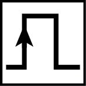

User Manual¶
Table of Contents
Introduction¶
The IonControl program is based around the following concepts, which are summarized below:
Pulse Program. The pulse program is a “pythonic” text file which is executed by a microcontroller implemented on the FPGA. The pulse program controls:
- The timing of all TTL outputs
- Counting on TTL inputs
- Monitoring of ADC inputs
- programming of DDSs
- programming of DACs
- behavior of FPGA PI loops
The pulse program can execute standard control structures, such as loops and conditionals, and can do simple math. It can also read data from on-board RAM.
All of this is implemented in firmware (known as a “bitfile”) which is written to the FPGA. At the moment (10/14/2015), bitfiles have been produced for the following two FPGA modules:
- Opal Kelly XEM6010-LX45
- Opal Kelly XEM6010-LX150
Other FPGA modules could in principle be added at some point in the future.
Scans. One dimensional scans are controlled by three separate interfaces:
- The scan interface allows a one-dimensional scan over any parameter defined in the pulse program, or any other instrument connected to the computer that is defined in the software. At each point in the scan, data is returned by the FPGA. The results of a scan are saved to a text file, and also registered in the Measurement Log.
- The evaluation interface determines how that data is plotted. An evaluation is a defined method for taking a set of data and reducing it to a single point for plotting, such as “mean” or “discriminator” or “parity.” As many evaluations as needed can be added. The plot windows are completely reconfigurable; you can add as many plot windows as necessary, and each evaluation can be directed to any plot window.
- The analysis interface determines how the data is fit at the conclusion of the scan. In addition, the analysis interface can push the results of a fit to a global variable, which can in turn be referenced by any part of the program. In this way, calibrations are straightforward.
Dedicated Counters. The dedicated counters interface allows continuous monitoring of the counters and ADCs connected to the FPGA. It displays counts whether or not a scan is running, and is therefore useful for continuous monitoring. It also has an interface for automatic ion loading.
Scripting. The scripting interface allows for the creation of extremely complex, automated experiments. It executes Python scripts, but adds a number of commands which allow control over the experiment.
Projects¶
All of the program settings, GUI configuration, data, etc. are attached to a specific project. Oftentimes only a single project is necessary for a given lab. However, if for whatever reason you need to be able to switch between totally different configurations of the program, the project functionality will allow this.
Project Selection¶
When you start the program for the very first time, you will be asked to select a base directory. This will be the directory under which will be the individual project directories. Once you select a base directory, the project selection GUI will appear:
{kind=link}
Project selection GUI.
Existing projects can be selected in the table, or a new project can be added by typing a name into the editor and clicking “create.” If “Set as default” is checked, the GUI will not be shown the next time the program opens. Instead, the selected project will be used. A different base directory can also be selected via this GUI.
This GUI creates a configuration file in the source directory: \IonControl\config\ProjectConfig.yml. This file contains three lines, specifying the base directory, the project name, and whether or not to show the project selection GUI the next time the program starts. The GUI can be bypassed entirely by editing this file directly. The GUI is simply an interface for editing the config file.
If you wish to see the project selection GUI the next time the program starts up, you can do so via the main control program by selecting File > Project. This will display the currently selected project along with its configuration, and give you the option to show the selection GUI on next startup. Alternatively, you can directly edit ProjectConfig.yml, and change showGui to True.
Experiment Configuration¶
Once a project is selected, the experiment configuration GUI will appear:
{kind=link}
Experiment configuration GUI.
This GUI allows you to select what pieces of hardware or types of hardware are connected to the computer, and how it is configured. It also allows you to selectively enable or disable specific software features and establishes the connection to the database. For example, select Opal Kelly FPGA: Pulser from the “Available Hardware” drop down menu, then click . This will add that item to the list of available hardware. A tab will appear with configuration data specific to that item. For the FPGA, click “Scan” to scan for Opal Kelly FPGA devices connected to the computer, which will populate the device drop down menu. Select from that menu which FPGA to use. Click “Upload” to upload the selected bitfile to the selected FPGA. Click “uploadOnStartup” to have the program automatically upload the bitfile whenever the program starts (this is normally not necessary).
{kind=link}
“Software Features” works the same way as does the hardware. Under “Software Features,” select Pulser and click . This has one configuration field, which is what piece of hardware to use for the pulser. Select Opal Kelly FPGA: Pulser from the dropdown. Other hardware/software features can be added similarly.
Each hardware and software item has an enable checkbox next to it. Unchecking this disables that item, and is functionally equivalent to removing that item completely by clicking . The only difference is that if an item is removed, its configuration data is deleted. If an item is unchecked, its configuration data remains. Therefore, use the enable checkbox for items you wish to remove only temporarily.
{kind=link}
Under “Database connection,” type in the password you set up during Installation.
If “Set as default” is checked, the GUI will not be shown the next time the program starts.
This GUI creates a configuration file in the project directory: \YourBaseDirectory\YourProjectName\config\ExptConfig.yml. This file contains a list of hardware, software, the configuration of each, and the database connection. As with the project selection GUI, the experiment configuration GUI is a front end for editing this file. The GUI can be bypassed by editing the file directly. As with the project configuration file, if you wish to see the experiment configuration GUI on next program start after it was already set to default, you can do so via the main control program by selecting File > Project. Alternatively, you can edit ExptConfig.yml and change showGui to True.
Pulse Program¶
Once the configuration files have been setup, the main program opens. The first time the program runs, the pulse program window will also open. On subsequent runs, it will return to whatever state it was in when it was closed last. To open the pulse program window, click  .
{kind=link}
The pulse program window consists of four sections. The primary section is the text file itself, which is under the heading Pulse Program. The two sections Shutters, Triggers, Counters and Parameters are interfaces to set the variables which are declared in the pulse program. The Shutters, Triggers, Counters window is for settings binary variables, while the Parameters window is for setting all other types of parameters. Finally, the RAM Control window is for directly writing to the RAM on the FPGA board.
{kind=link}
The pulse program interface
The pulse program written here is run on the FPGA. It is compiled to a machine code that contains microcontroller instructions that are understood by the FPGA.
Pulse Program Syntax¶
variable types¶
- const
A constant value, which we typically use for things like DDS Channels, e.g.:
const DDSDetect = 0 const DDSCooling = 1
parameter
- var
An internal variable. This is something that might change throughout the course of an experiment (unlike const), but which is set within the experiment rather than by the user, e.g.:
var experimentsleft = 100
where experimentleft is an internal variable which keeps track of how many experiments are remaining.
counter
shutter
masked_shutter
trigger
address
exitcode